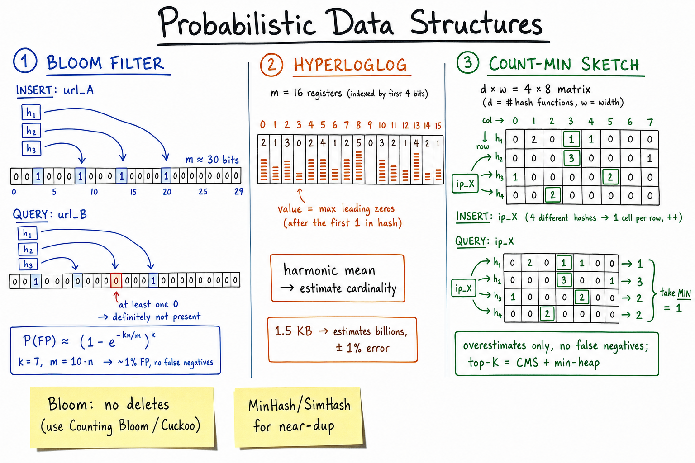

Probabilistic Data Structures // Concept
Bloom filters, HyperLogLog, Count-Min Sketch — trade tiny accuracy loss for huge memory savings. At billions-of-items scale, exact counts are too expensive; probabilistic sketches are the right answer.

Bloom filter (bit array, k hashes per item, FP only); HyperLogLog (m registers tracking max-leading-zeros, harmonic mean); Count-Min Sketch (d×w matrix, min across rows for frequency).
01 — What Problem It Solves
EXACT structures at billions of items: HashSet of 10B URLs: 500 GB HashMap of 10B (ip, count): 1 TB Counting unique users with HashSet: O(N) memory PROBABILISTIC: Bloom filter of 10B items at 1% FP: ~12 GB (~40x cheaper) HyperLogLog of 10B uniques at 1% err: 1.5 KB (~300M x cheaper!) CMS for top-K of 10B events: tens of MB The trade: tiny error rate (e.g. 1% false positive, 1% count error) for orders of magnitude less memory.
Used everywhere at scale: web crawlers (URL dedup), CDNs (cache hits), DBs (LSM trees), analytics (DAU), ad servers (uniques), abuse (top heavy hitters).
01a — Core Vocabulary
| Term | Meaning |
|---|---|
| False positive (FP) | Structure says "yes" when truth is "no." Bloom & CMS overshoot. |
| False negative (FN) | Structure says "no" when truth is "yes." Bloom: NEVER. CMS: NEVER. HLL: estimate ranges. |
| Bloom filter | Bit array + k hash functions. Tests "maybe in set" / "definitely not." |
| Counting Bloom | Counters instead of bits. Supports deletion. Larger. |
| Cuckoo filter | Better Bloom: supports delete, slightly smaller for same FP. |
| HyperLogLog (HLL) | Estimates cardinality (count of unique items). |
| Count-Min Sketch (CMS) | Estimates frequency of items. Overestimates only. |
| Misra-Gries / heavy hitters | Tracks top-K frequent items. |
| MinHash | Estimates Jaccard similarity between sets. |
| SimHash | Locality-sensitive hash; near-dup detection (web crawler). |
| k | Number of hash functions (Bloom). |
| m | Bit-array length (Bloom) / register count (HLL). |
02 — The 3 Main Categories
| Category | Question answered | Structures |
|---|---|---|
| Membership | "Have I seen X?" | Bloom filter, Counting Bloom, Cuckoo filter |
| Cardinality | "How many distinct items?" | HyperLogLog, LogLog, Linear Counting |
| Frequency / heavy hitters | "How often was X seen?" / "Top-K most frequent?" | Count-Min Sketch, Count-Sketch, Misra-Gries |
| Similarity | "How similar are sets A and B?" | MinHash, SimHash, LSH |
03 — Diagram
Main diagram above shows the three workhorses: Bloom's bit-array + k-hash insert/query; HLL's registers tracking max-leading-zeros across hashed items; CMS's d×w matrix with d hash functions, taking min across rows for the count estimate.
04 — Bloom Filter Deep Dive
STRUCTURE:
m-bit bit-array (all 0 initially).
k independent hash functions h1, h2, ..., hk.
INSERT(x):
for i in 1..k: bits[ hi(x) % m ] = 1
QUERY(x):
for i in 1..k:
if bits[ hi(x) % m ] == 0: return "DEFINITELY NOT PRESENT"
return "MAYBE PRESENT" (might be a false positive)
KEY GUARANTEE:
- NO false negatives (if you've inserted, query returns "maybe").
- YES false positives (other items' bits can collide).
FP MATH:
P(FP) ≈ (1 - e^(-kn/m))^k
Optimal k = (m/n) * ln(2)
For target FP rate p: m/n = -ln(p) / (ln 2)^2
EXAMPLE:
n = 1B items, target FP 1%:
m/n ≈ 9.6 bits per item
m ≈ 1.2 GB
k ≈ 7 hash functions
→ 1.2 GB for 1B membership queries vs ~50 GB exact.
NO DELETES. Once a bit is 1 it stays 1 (another item may also need it).
05 — Counting Bloom & Cuckoo Filter
Counting Bloom
Replace each bit with a small counter (typically 4 bits). Insert increments k counters; delete decrements. Supports deletion at 4x the memory of a regular Bloom.
Cuckoo filter (modern alternative)
Stores small fingerprints in buckets (cuckoo hashing). - Supports DELETE. - Lower FP rate per byte than Bloom (~3% saving). - Slightly worse insert performance under load (cascading evictions). - Picks up where Counting Bloom left off; widely used now.
Default: Bloom unless you need deletes → Cuckoo. Counting Bloom only when Cuckoo isn't in your library.
06 — HyperLogLog
PROBLEM: count unique users in a day. 100M+ uniques. Exact = HashSet = 5GB.
INTUITION:
Hash each item to a uniformly-random integer.
Track the MAX number of leading zeros seen.
If you ever see 30 leading zeros, you've probably seen 2^30 items
(each hash has 1/2^30 chance of starting with 30 zeros).
HYPERLOGLOG:
Split into m registers (e.g. m=2^14 = 16384).
First log2(m) bits of hash → register index.
Remaining bits → count leading zeros, store max in that register.
Estimate = m^2 / sum(2^-Mj) with bias correction (Flajolet et al.)
PROPERTIES:
- Memory: 6 bits per register × m = ~12 KB for m=16K.
- Accuracy: standard error ≈ 1.04 / sqrt(m)
m=16K → ~0.8% error
- MERGEABLE: HLL(A) + HLL(B) = HLL(A ∪ B). Just take max per register.
USED BY:
- Redis PFCOUNT / PFADD / PFMERGE
- Presto, Trino: approx_distinct
- Google's old engine, BigQuery COUNT_DISTINCT
- Ad click aggregator for unique impressions
- Web crawlers: unique domains seen
07 — Count-Min Sketch
PROBLEM: track "how many times did item X appear?" across billions of events.
STRUCTURE:
d hash functions h1..hd
d × w matrix of counters, all 0
INCREMENT(x):
for i in 1..d: counts[i][ hi(x) % w ] += 1
QUERY(x):
return MIN over i in 1..d of counts[i][ hi(x) % w ]
INTUITION: each row could collide and overestimate. Taking min cancels most collisions.
PROPERTIES:
- Overestimates only (count returned >= actual).
- Error bounded by ε: w = ceil(e/ε), d = ceil(ln(1/δ)).
ε=0.001, δ=0.01 → w=2718, d=5 → ~50 KB.
- Mergeable (sum the matrices).
TOP-K HEAVY HITTERS:
CMS + min-heap of size K.
On increment, query CMS; if estimate > min-heap top, push (x, est).
Result: top-K frequent items in tiny memory.
USED BY:
- Top-K leaderboard
- DDoS detection (top IPs by hits)
- Heavy hitter tracking in routers (Cisco)
- Cassandra hot-key detection
08 — MinHash & SimHash (Near-Dup)
MinHash — estimate Jaccard similarity
Given sets A, B (e.g. shingles of two docs): Jaccard(A, B) = |A ∩ B| / |A ∪ B| MinHash sketch: Pick k random hash functions. signature(A)[i] = min over a in A of hi(a) similarity_estimate = fraction of signature positions where sig(A)[i] == sig(B)[i] → equals expected value of Jaccard. Provably. USE: deduplication of millions of docs in linear time.
SimHash — locality-sensitive hash
Compute a 64-bit hash where SIMILAR documents have CLOSE hashes (low Hamming distance, typically < 3 bits flipped for near-dup). Used by: - Web crawler — near-dup detection across web pages - Google's original near-dup paper (Charikar 2002) ALGORITHM: 1. Tokenize doc into terms with weights. 2. For each term, compute its 64-bit hash. 3. For each bit position: +weight if bit=1, -weight if bit=0. 4. Output bit = sign of position sum. QUERY: store SimHash in DB. Find docs within Hamming distance 3 via multi-table lookup (chunked SimHash).
09 — Choosing the Right Structure
| Question | Use |
|---|---|
| "Have I seen this URL?" | Bloom filter |
| "Have I seen X, with deletes?" | Cuckoo filter |
| "Is this key in the SSTable (LSM)?" | Bloom filter per SSTable (Cassandra, RocksDB) |
| "How many unique visitors today?" | HyperLogLog |
| "Top-10 most-viewed videos?" | Count-Min Sketch + heap |
| "How often did this IP hit my API?" | Count-Min Sketch |
| "Are these two docs near-duplicates?" | SimHash or MinHash |
| "Exact count, small dataset" | Use a real HashSet/HashMap — don't probabilistic-ify prematurely. |
N-2 — Where It Shows Up
- Web crawler — Bloom for URL-seen dedup, SimHash for content dedup.
- Top-K leaderboard — Count-Min Sketch + heap.
- Ad click aggregator — HLL for unique users / impressions.
- Search autocomplete — CMS for trending queries.
- Distributed cache — Bloom to skip cache lookups for definitely-missing keys.
- Cassandra — per-SSTable Bloom filter in LSM read path.
- Redis — PFADD/PFCOUNT (HLL), bf.add (RedisBloom module).
- Caching — Bloom filter in front of cache to avoid penetration to DB.
N-1 — Common Interview Probes
- "How do you dedupe 1B URLs in memory?" → Bloom filter.
- "How do you count unique users?" → HLL.
- "Top-K heavy hitters?" → Count-Min Sketch + heap.
- "Can a Bloom filter give a false negative?" → No.
- "Why does LSM use a Bloom filter?" → skip SSTables that definitely don't contain the key.
- "How would you detect near-duplicate web pages?" → SimHash with Hamming distance.
- "How do you tune a Bloom filter?" → pick m and k from target FP rate and n.
N — Interview Q&A
Why can't a Bloom filter have false negatives?
Inserting flips k bits to 1. Those bits stay 1 forever (no delete). Query checks the same k bits; if all are 1 → "maybe". If any is 0 → you couldn't have inserted this item (because insert would have set it). So a "not present" answer is always truthful.
How do you tune a Bloom filter?
Given expected items n and target FP rate p: m = -n · ln(p) / (ln 2)^2 bits, and k = (m/n) · ln 2 hash functions. Rule of thumb: ~10 bits/item gives 1% FP with 7 hashes. Don't over-allocate — 10x bigger only buys you a much smaller FP at storage cost.
Why doesn't a Bloom filter support deletion?
Multiple items may all set the same bit; clearing it would delete all of them. Use Counting Bloom (each "bit" is a 4-bit counter, increment on insert, decrement on delete) or Cuckoo filter (uses fingerprints + cuckoo hashing).
Why does LSM-tree storage need a Bloom filter?
Reads in LSM may need to check many SSTables (one per level + memtable). Each SSTable has its own Bloom filter. Before reading the file, check the filter: if "not present" → skip the disk I/O entirely. Saves 90%+ of reads on cold keys. Used by Cassandra, RocksDB, LevelDB, HBase.
HyperLogLog — how does counting leading zeros estimate cardinality?
If hashes are uniformly random, P(at least k leading zeros) = 2^-k. So if you've seen at least k leading zeros once, you've probably seen ~2^k items. HLL splits the stream into m registers (via first bits of hash), tracks max leading zeros per register, averages with a harmonic mean. Standard error ≈ 1.04/sqrt(m).
Why does Count-Min Sketch overestimate but never underestimate?
Each row's counter at h(x) is incremented every time x appears plus every time any item that hashes to the same bucket appears. So each row's count ≥ true count for x. Taking min across rows reduces collision noise but still respects the ≥ bound.
What's the memory difference between exact and HLL for counting uniques?
Exact HashSet of 1B 16-byte keys: ~32 GB. HLL with m=16K registers: 12 KB. ~2.5 million× smaller, ~1% error. At "DAU" scale, this is the difference between feasible and impossible.
How does SimHash detect near-duplicate documents?
Similar documents (same shingles, mostly) end up with similar 64-bit SimHash values — low Hamming distance. Empirically, < 3 bits different = near-dup. Store all docs' SimHashes; for a new doc, look up all hashes within Hamming distance 3 using chunked-index tricks. Used by Google for crawl dedup.
Bloom filter or set in front of DB?
Bloom protects DB from "I know X is not in the cache" misses without paying the DB hit. Used in cache stampede / cache penetration patterns. Big saving for read-heavy workloads with many never-existing keys (spam, scrapers).
How do you merge two HLLs from two regions?
HLL is mergeable: merged[i] = max(A[i], B[i]) for each register. Take the union estimate from the merged sketch. No accuracy loss. Same applies to Count-Min Sketch (cell-wise sum). This is why probabilistic sketches are ideal for distributed analytics — you can compute partial sketches per shard and merge.
Tail-bound trade: when do you NOT use a probabilistic structure?
(a) Dataset is small (millions, not billions). HashMap is fine and exact. (b) FP/error rate is unacceptable (e.g. payment processing — "maybe charged" is wrong). (c) You need to enumerate the set (Bloom can't list its members).
SDE-2 vs SDE-3 differentiator?
| SDE-2 | SDE-3 |
|---|---|
| Names Bloom filter for "dedup" | Picks Bloom vs Cuckoo vs Counting Bloom by delete needs; tunes (m, k) from (n, p); knows HLL for cardinality with merge property; CMS+heap for top-K; SimHash for near-dup; uses Bloom in LSM reads, cache-penetration defense; understands FP-only/FN-impossible asymmetry |